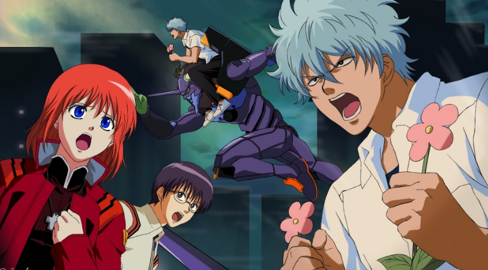
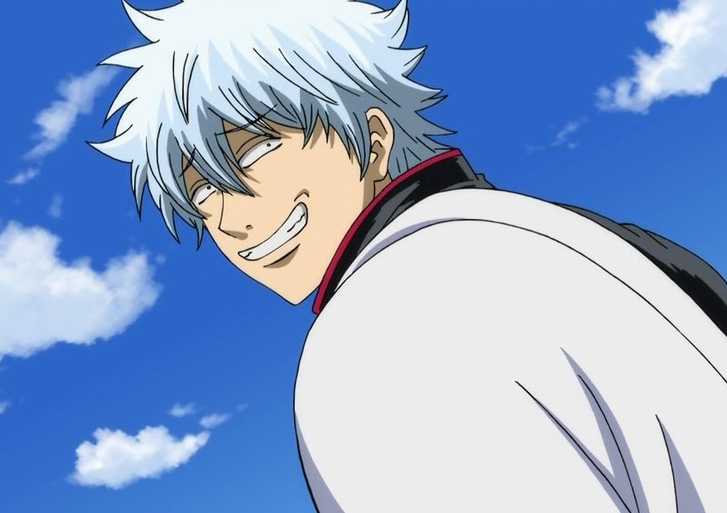

"Gintama" is a shounen manga created by Japanese manga artist Hideaki Sorachi. It was serialized in
"Weekly Shonen Jump" on the 2nd of 2004 and ended on the 42nd of 2018. It was later transferred to "JUMP
GIGA" 2019 WINTER vol.1~vol.3 to continue serialization, and then transferred to Gintama App for
serialization, and the final episode was pushed on June 20, 2019. Starting from April 4, 2006, the TV
animation of the same name adapted by Sunshine Animation began to be broadcast on TV Tokyo. As of August
2018, the cumulative circulation of single volumes of "Gintama" in Japan has exceeded 55 million. As the
first full-length comic strip in his career, Sorachi Hideaki originally hoped to Japaneseize "Harry
Potter" and create a comic centered on the demons' extermination of the school. However, due to the
words of the editor-in-chief Mr. Tsunehei Onishi: "You should know that next year's Taiga drama will
feature the Shinsengumi, right? Then just follow the trend." Sorachi Hideaki decided on the story
concept of "Gintama". In order to make it easy for female students across the country to say "Hey! Have
you watched this week's Gintama (pronounced like "金玉", a common name for testicles)?" and to create a
relaxing Japan, after family meetings, Sorachi Hideaki decided to use "Gintama" as the name of the
manga. Only Sorachi Hideaki and editor Onishi Tsunehei were quite satisfied with this name, but the
evaluation of other members of the editorial department was very poor. However, the editor Tsunehei
Onishi insisted that "it was up to me to handle it, so I decided to use Gintama" before the case was
passed.

At the end of the Edo period, aliens called "celestial beings" attacked. The war between the people on
earth and the heavenly beings broke out immediately, and a large number of warriors and patriots from
the anti-barbarian faction participated in the battle against the heavenly beings. After the shogunate
saw the powerful strength of the heavenly beings, they signed an unequal treaty with the heavenly beings
without authorization and allowed them to enter the country. Later, the "Abandoned Sword Order" was
issued and the samurai's swords were taken away. Since then, gods have been arrogant and the shogunate
has become a "puppet regime." In such an era, there was a samurai who happily lived a whimsical life
with his companions.